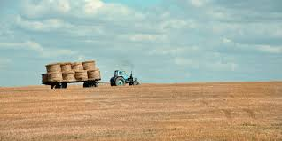
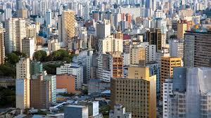

Introdução
O campo (espaço rural) e a cidade (espaço urbano) possuem realidades diferentes, mas são profundamente interconectados. Enquanto o campo foca na produção de matérias-primas e alimentos, a cidade concentra os serviços, indústrias e a maior parte da população.
O Campo (Espaço Rural)

Caracteriza-se pela presença de áreas verdes, plantações, criação de animais e menor densidade demográfica.
- Ar mais puro e contato com a natureza.
- Produção de alimentos (agricultura e pecuária).
- Ritmo de vida mais tranquilo.
A Cidade (Espaço Urbano)

Caracteriza-se pela grande concentração de pessoas, prédio, comércios, indústrias e infraestrutura tecnológica.
- Maior oferta de empregos e serviços (hospitais, escolas).
- Opções variadas de lazer e cultura.
- Problemas com trânsito e poluição.
Qual estilo de vida combina mais com você?
Clique nos botões abaixo para descobrir as vantagens de cada ambiente:
Clique em um dos botões acima para ver o conteúdo.